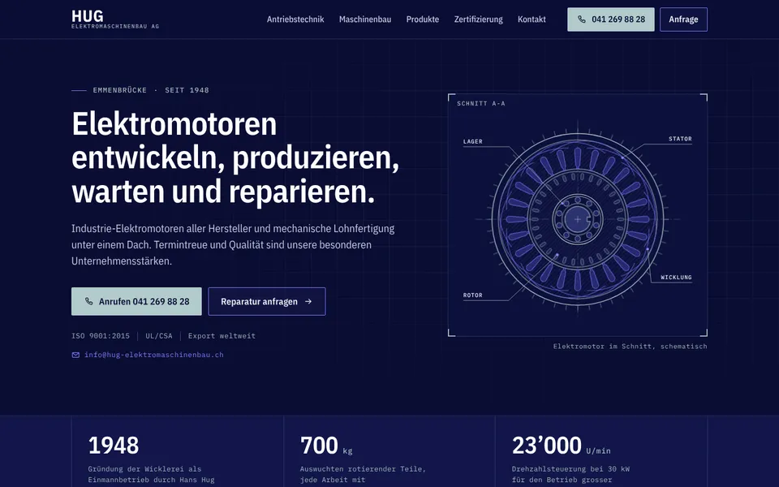
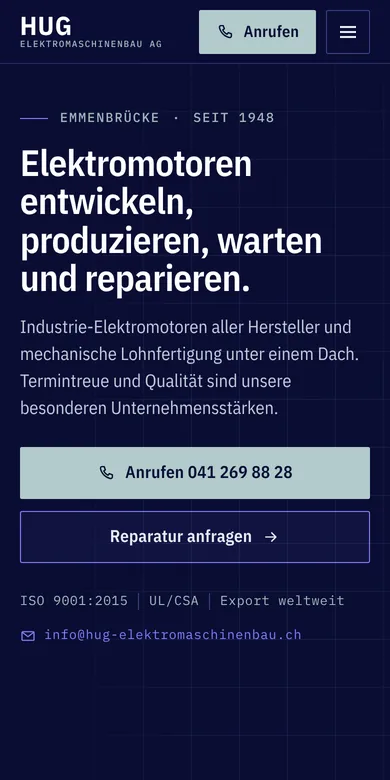

Design A
Datenblatt
Dunkel wie ein Prüfstand, in Navy und Stahl, die Werte in Messschrift: Im ersten Bild zeichnet sich ein Elektromotor im Schnitt mit Stator, Wicklung, Rotor und Lager. Darunter folgen Ihre echten Werte wie Auswuchten bis 700 kg, alle Motorarten, das Datenblatt des Ersatzmotors für die Voith PM4 und Ihre Referenzteile auf dunklem Tuch.
- Dunkel und Navy
- Motor im Schnitt
- Echte Messwerte